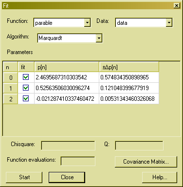

Fit functions to measurement data

In this dialogbox you can fit functions to measurement data. In the two combo-boxes at the top you can select the function and the data. Below you can select a fit-algorithm. There are three algorithms implemented, Levenberg-Marquardt, Nelder & Mead and Simulated Annealing. The Levenberg-Marquardt algorithm is faster if your function provides derivative information. If you omit the derivative information, the algorithm computes numerical derivatives. The other algorithms do not use derivative information.
Next there is a table with the function parameters. In the checkboxes on the left you select which parameters to fit for. You can edit the parameters for an initial guess. On the right, the errors are displayed. This errors correspond to a 68% confidence interval, e.g. they are simply the square-roots of the diagonal elements of the covariance matrix of the fit.
Below the table are the chisquare and the goodness of fit value Q = gammq(0.5*(N-M),0.5*chisquare), where N is the number of data points and M is the number of parameters that where fitted for. Also the number of function evaluations is displayed. If you press the Covariance Matrix... button, the covariance matrix of the fit is displayed.
To start fitting, press the Start button.